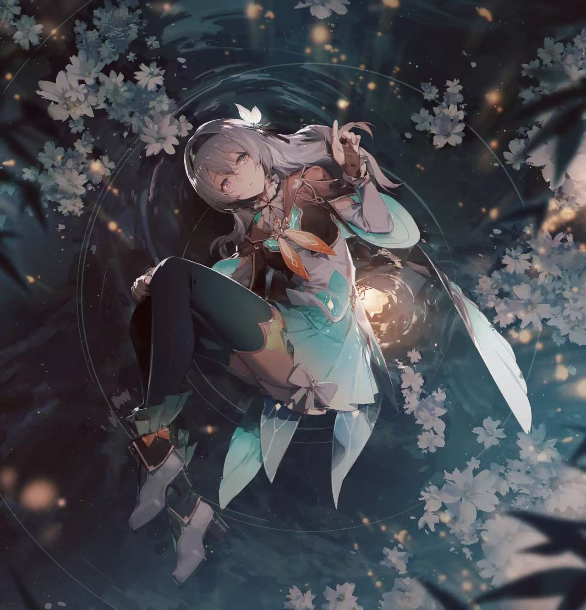
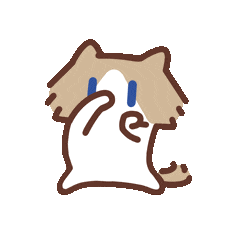
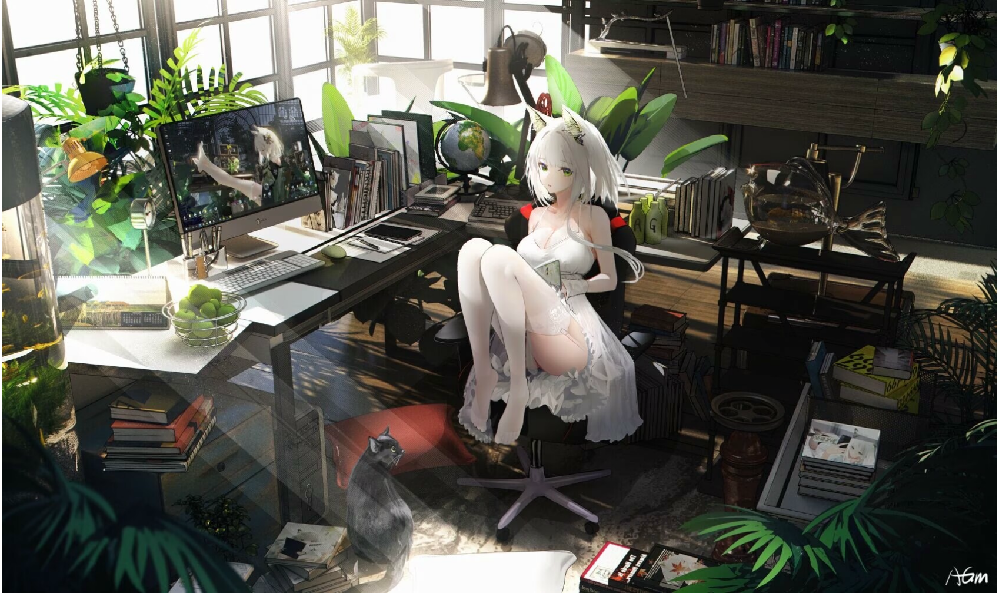
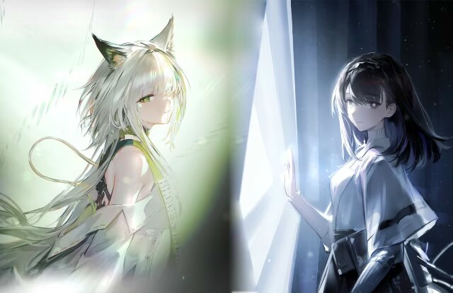

01
幻想角色
动漫或游戏里的角色，也能越过屏幕边界。
WINDOWS 桌面小伙伴
任意人物、动漫或游戏角色、动物照片与 GIF，都能在本机变成透明、可拖动、会回应、可切换的桌面伙伴。

向下浏览01 · 三步拥有
不上传，不绕路。把喜欢的素材拖进来，其余交给本地处理。

支持 JPG、PNG 与 GIF，拖入即可开始。
透明置顶、自由拖动，随时陪在桌面。
动漫或游戏里的角色，也能越过屏幕边界。
照片里的玩偶、宠物和纪念，也能常驻桌面。
会动的表情与动作，放到桌面就有了生命力。

03 · 桌面时光
工作、学习或放空时，它都可以安静停在一旁；需要互动时，轻轻一点就会给你回应。

不止一个样子
照片桌宠不只负责抠图。你可以按角色分组管理形态、保存独立气泡内容，并为每位伙伴选择不同的性格。
04 · 功能亮点
围绕桌面使用设计的交互、管理与隐私能力。
内置人物与动物分割模型，离线识别主体并生成透明背景。
按角色分组保存多张照片，双击只在当前角色的形态中切换。
逐帧抠图并保留帧延迟与循环设置，最多支持 300 帧。
单击随机触发回弹、旋转、跳跃、抖动与弹跳等动作。
选择角色性格，自定义台词、字体、颜色与玻璃质感。
今天也一起加油吧。
拖动定位、滚轮缩放、动态置顶、透明穿透与托盘隐藏。
准备好了吗？
把喜欢的角色带到桌面，让每一天都有小惊喜。